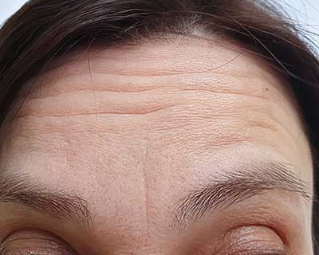
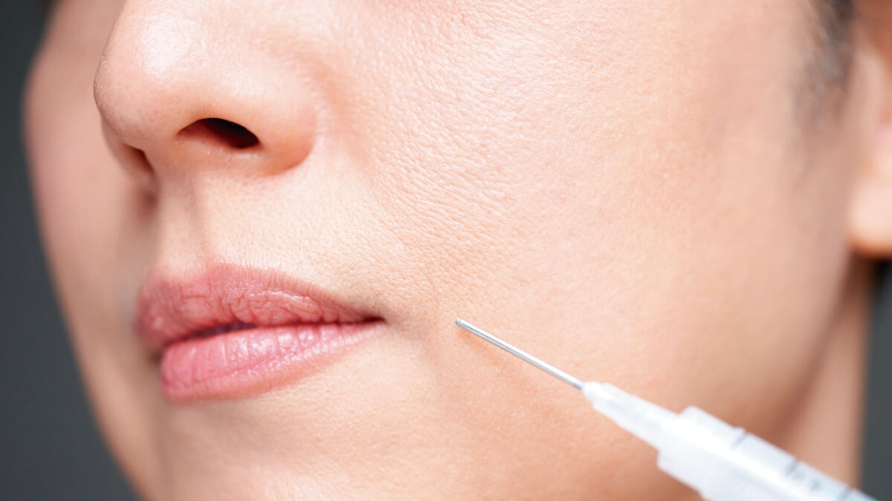
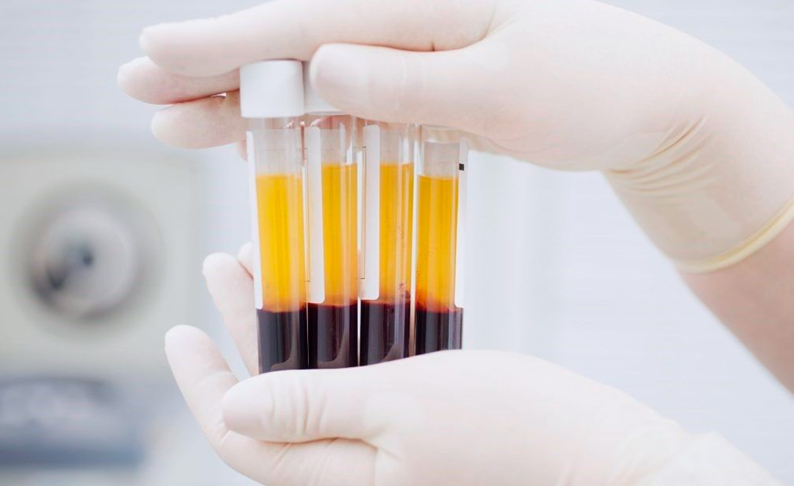
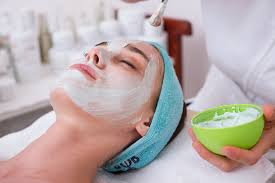

ARMONIZACION FACIAL

TOXIMNA BOTULINICA
Tratamiento inyectable que reducelas arrugas y líneas de expresión alrelajar los músculos faciales

ACIDO HIALURONICO
Filler dérmico que hidrata y aporta volumen a la piel, suavizando arrugas y mejorando contornos faciales.

PLASMA RICO EN PLAQUETAS
El tratamiento de plasma rico en plaquetas (PRP) utiliza tu propia sangre para regenerar la piel. Al concentrar las plaquetas y aplicarlas en áreas específicas, se estimula la producción de colágeno.

HIDRATACION FACIAL
La hidratación facial profunda revitaliza tu piel, devolviéndole su brillo natural. Este tratamiento nutre y repara, dejándote una piel más suave, fresca y luminosa.

SKIN CARE